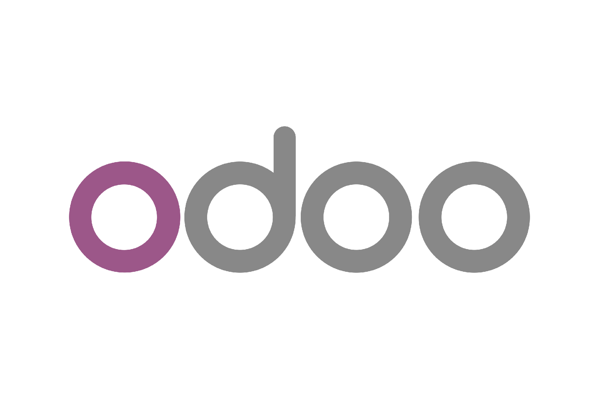

Understand the business question
Clarify what management or operations needs to review, what is unclear, and what follow-up action the report should support.
I am a problem solver driven by curiosity. This portfolio is a living record of how I explore problems, build workflows, develop tools, and grow my skills through real projects, data, and AI-assisted experimentation.

Analytical Systems Builder
Years in Operations
Odoo & SAP Process Context
Dashboards, Reporting & Review Logic
A visual map of how my skills developed from engineering foundations into business systems, ERP analytics, and AI-assisted execution.
The curve is a visual metaphor. It shows relative skill development and maturity, not a measurable score.
I start by understanding how work actually moves across sales, operations, procurement, finance, inventory, and ERP records before deciding what should be measured.
I check what fields, statuses, references, exceptions, and handoffs mean inside the business process before turning them into KPIs or dashboard rules.
I build dashboards, tables, and reporting workflows that help users review status, traceability, profitability signals, and follow-up priorities more clearly.
I use automation and AI-assisted tools to speed up documentation, reporting logic, and project handoffs while keeping final judgment on business rules and data quality human-led.
Supporting VP Operations with operational analytics, ERP process governance, reporting automation, commercial review, and cross-functional coordination.
Managed operational setup, project coordination, manpower readiness, customer support, and profitability considerations.
Focused on profitability analysis, operational monitoring, dashboard development, and executive reporting for maintenance contracts.
Developed cost monitoring systems, operational dashboards, and cost governance improvements across service operations.
I start from the business question, then map the process, validate the data meaning, and turn the logic into reporting outputs that support review and follow-up.
Clarify what management or operations needs to review, what is unclear, and what follow-up action the report should support.
Trace how records move through sales, operations, procurement, inventory, finance, and ERP fields.
Check field meaning, statuses, references, edge cases, and source-of-truth logic before creating KPIs.
Turn validated rules into SQL, dashboards, tables, exports, or automation workflows that business users can review.
Design the output so users can see status, traceability, review signals, and follow-up priorities clearly.
Use AI-assisted tools, automation, and documentation to move faster while keeping final judgment on business meaning and data quality.
Start with the flagship Odoo case study, then explore supporting projects that show analytics, reporting, automation, and market-review workflows.

Odoo | ERP analytics caseA case study of how I turned scattered ERP transactions into management-ready views.
In this project, I mapped how sales, purchasing, production, delivery, invoicing, and payment data connect in Odoo. Then I reviewed the business logic behind the data and built dashboard views that help teams see order status, issues, insights, and follow-up points more clearly.
View full Odoo case studyPublic-safe case study, built from real ERP analytics work.
Mapped how sales orders, internal orders, purchasing, production, delivery, invoices, and payments connect.
Reviewed ERP fields, statuses, references, and unusual cases before turning them into report logic.
Built dashboard views that help managers and teams review order progress, profitability, insights, and follow-up points.

Flask-based analytics demo with sample ERP-style data, SQL query support, table browsing, and decision-support views.
Dashboard for market monitoring, allocation tracking, and macro review using Google Sheets, Looker Studio, and TradingView widgets.
Homepage positioning refined.
Odoo flagship evidence strengthened.
Skill Development Curve refined for clearer homepage storytelling.